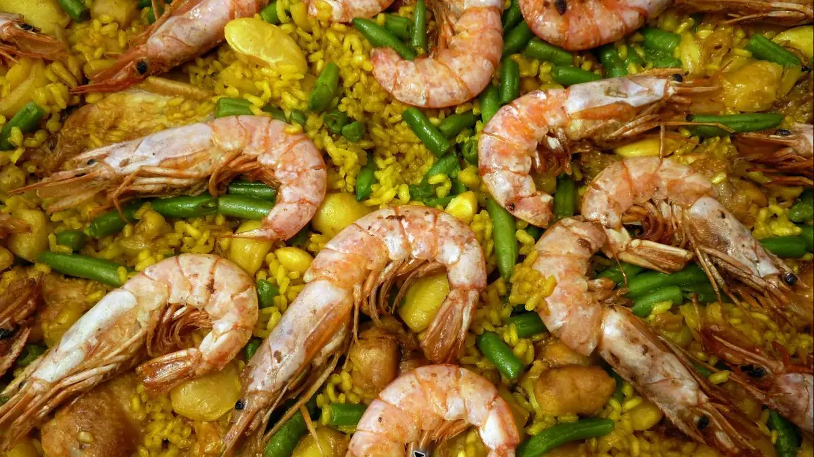

DANI'S PICK
Paella
Golden rice, bold flavour and one of Spain's great dishes for sharing.
Photo by Katja Schulz · CC BY 2.0 · cropped
MADRID, THE DANI WAY
The places I genuinely recommend for great food, memorable drinks and a proper taste of the city.
01
COME HUNGRY

DANI'S PICK
Golden rice, bold flavour and one of Spain's great dishes for sharing.
Photo by Katja Schulz · CC BY 2.0 · cropped
Paella
Casa Benigna ↗A family-run specialist known for its distinctive rice dishes served in a patella.
La Barraca ↗A Madrid classic in the city centre.
Los Arroces de Segis ↗Authentic paella recipes and other rice dishes.
Patatas bravas
Las Bravas ↗Home of the famous secret sauce.
Docamar ↗A little outside the centre, but my favourite in Madrid.
Cocido madrileño
Restaurante La Bola ↗A Madrid institution for the city's slow-cooked chickpea stew.
02
OLD-SCHOOL MADRID
Fried cod & cañas
Casa Revuelta ↗Order the battered cod with a cold caña. No ceremony, just proper Madrid.
Vermouth & callos
Bodegas Ricla ↗Tiny, lively and old-school. Go for vermouth, callos and preserved seafood.
The legendary Yayo
Casa Camacho ↗Order a Yayo: vermouth, gin and lemon soda. A true Malasaña institution.
03
SAVE ROOM
04
AFTER DARK
Speakeasy bars
Fat Cats ↗The entrance looks like a jewellery shop.
Salmon Guru ↗Creative cocktails and one of Madrid's liveliest rooms.
Rooftops
RIU Hotel rooftop ↗For the height and panoramic views.
Bulan Fit Experience ↗A rooftop hidden above a gym.
Círculo de Bellas Artes ↗Classic Madrid charm.
Salvador Bachiller secret garden ↗Enter the shop, take the lift to the top floor and keep the secret.
05
DON'T MISS

SLOW MADRID
THANK YOU FOR JOINING ME
Your review helps other travellers find the tour — and it means a lot to me.
Download the original PDF ↓{kind=link}